01
내 양을 먹이라
모닥불 앞에 둘러앉은 예수님과 제자들, 그 곁을 지키는 배 한 척.
가족과 신앙, 그리고 길 위의 여정을 담은 그림들.
손끝에서 태어난 순간들을 오래도록 간직합니다.
모닥불 앞에 둘러앉은 예수님과 제자들, 그 곁을 지키는 배 한 척.
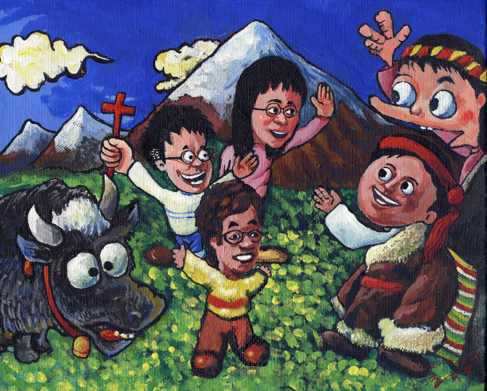
설산을 배경으로, 십자가를 들고 복음을 전하는 가족.
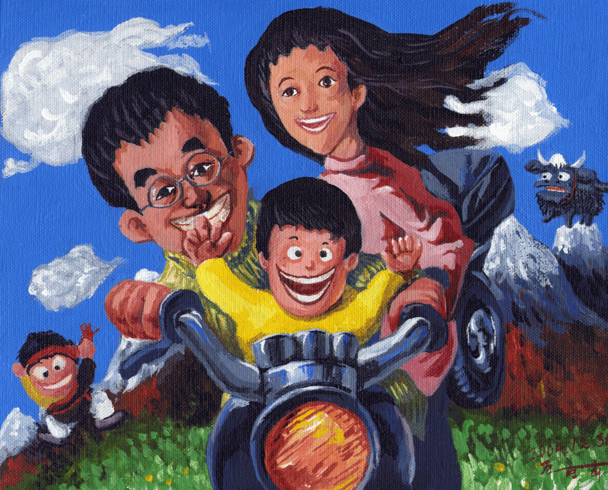
오토바이에 올라탄 가족과, 설산 위를 함께 달리는 바람.
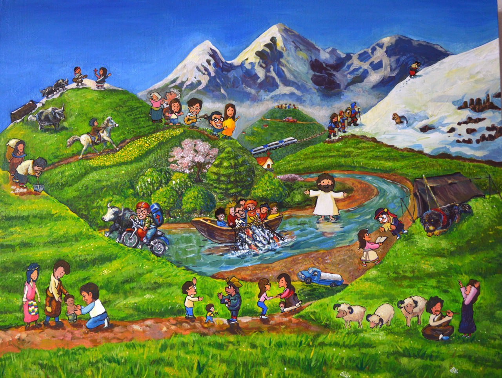
티벳에서 이루어진 전도자의 역사.
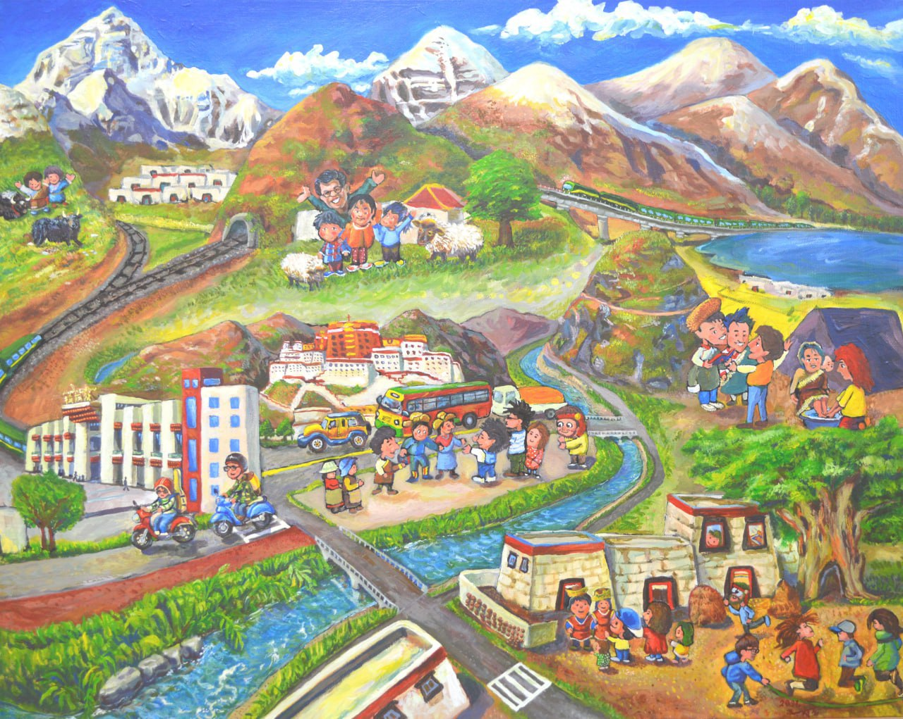
티벳에서 일어나는 소망의 노래.
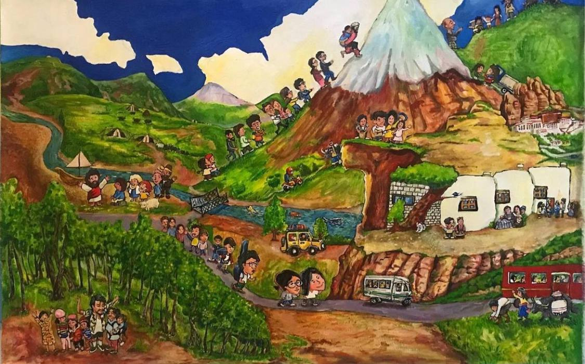
T7000으로 달려간 복음의 전도자들.
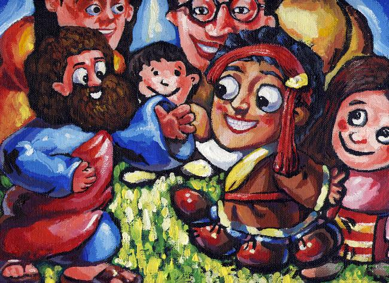
오직 예수님 안에 영원한 생명이 있다.
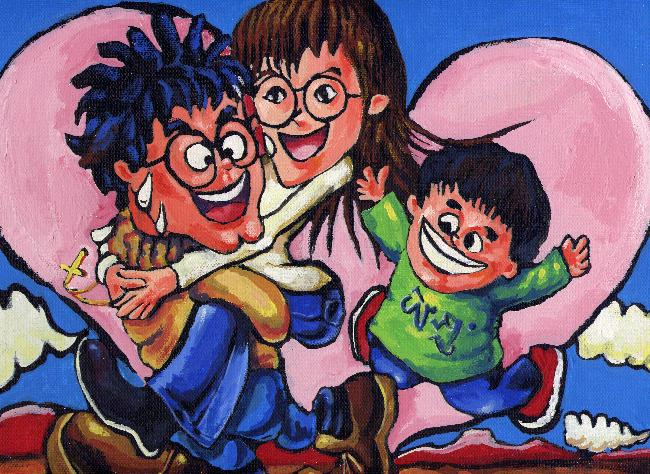
분홍빛 하트를 배경으로 선 가족의 포옹.
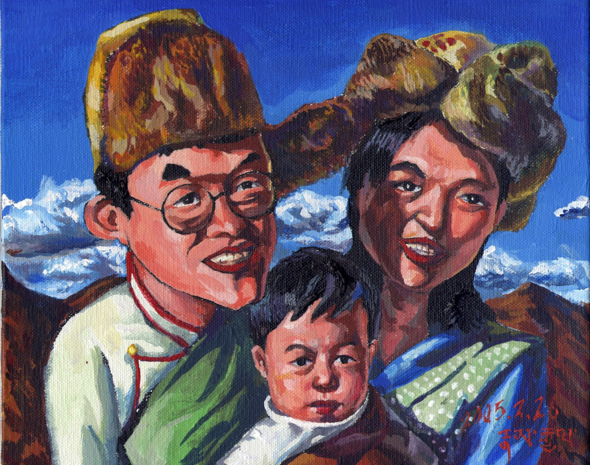
전통 옷을 입은 부모와 아기의 다정한 초상.
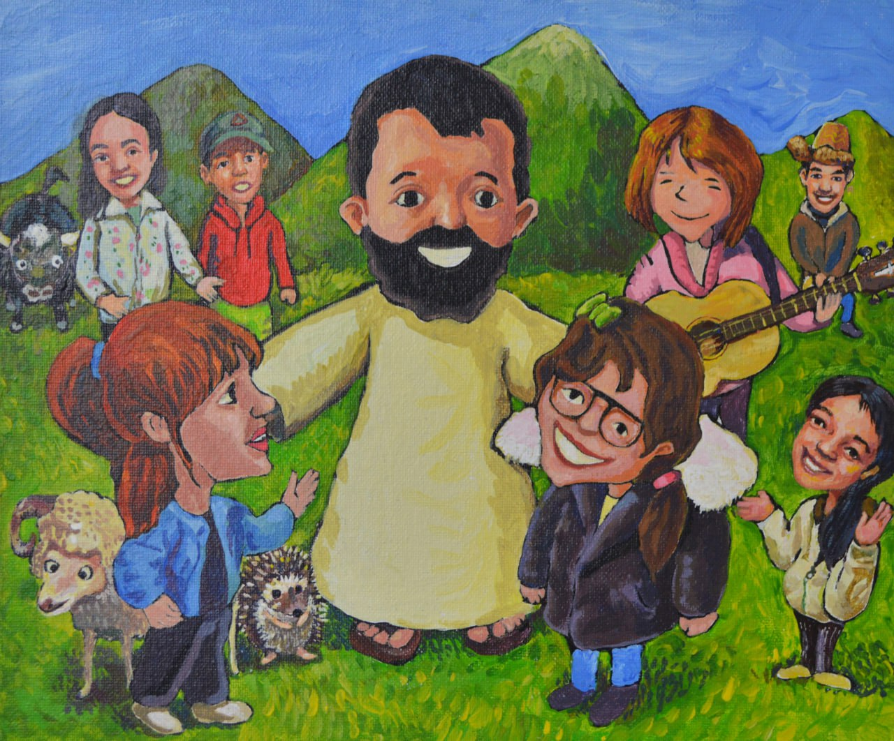
푸른 들판에서 예수님과 함께하는 순간.
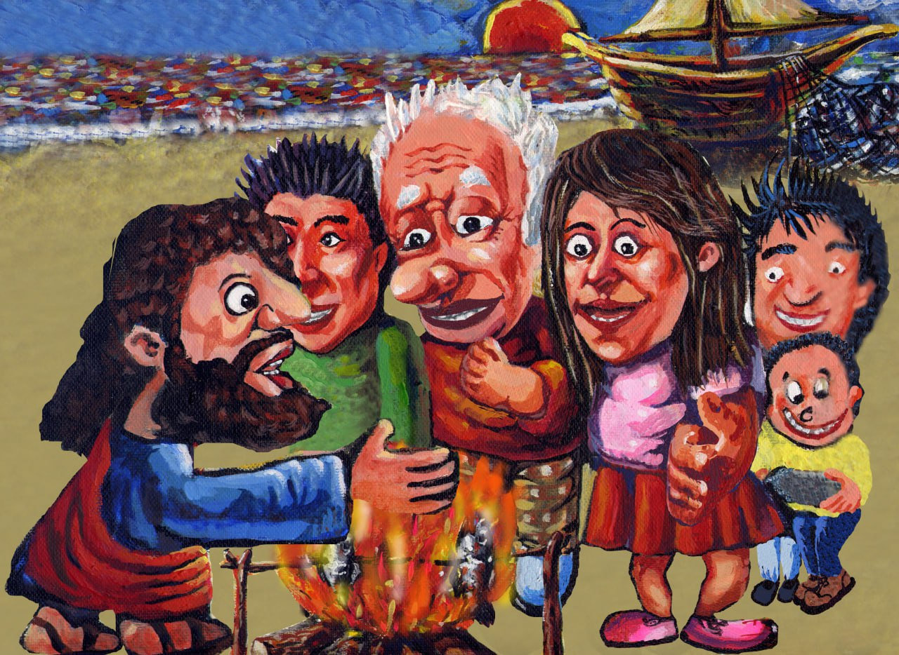
예수님께서는 모든 세대를 제자로 부르신다.
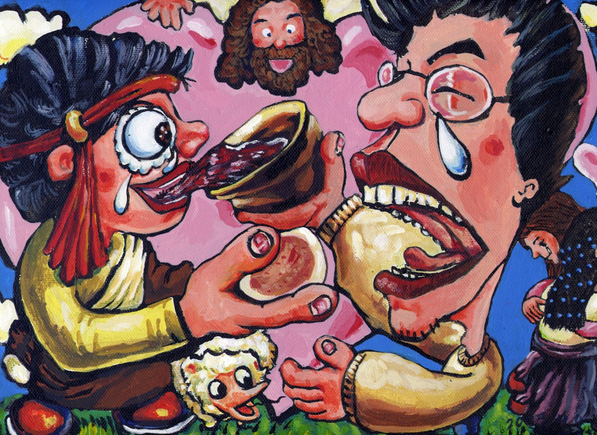
빵과 잔을 나누는 손길, 그 안에 담긴 마음.